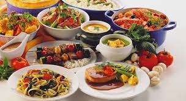

| Gastronomia | Restaurante |  |
|---|---|---|
| Sidrerias y asadores | ||
| Bodegas de vino | ||
| Productos tipicos | ||
| Escuelas de hosteleria | ||
| Cultura | Archivos y bibliotecas | |
| Museos | ||
| Palacios de congreso | ||
| Ferias de muestra | ||
| Ocio | Entretenimiento y diversion | |
| Ocio cultural | ||
| Excurciones de deportes |